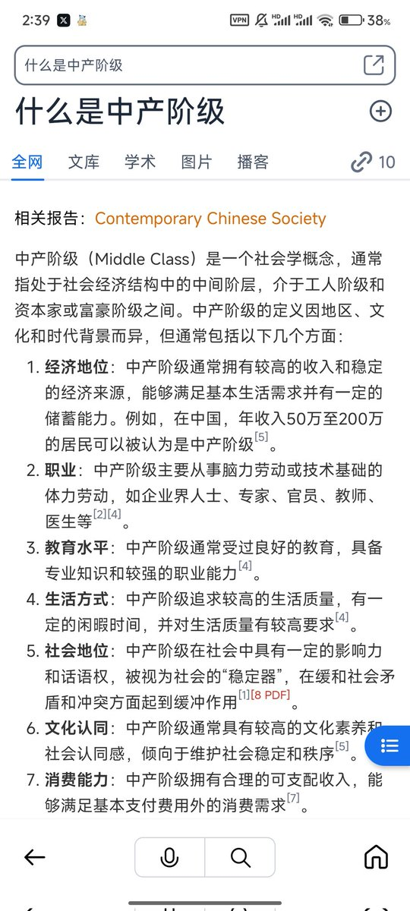

冰棍好烫喵 🍥🧊🍔🍟🍜🍣🍙🍧🍮🍩☕️💊🤤
@bghtnya
@mizuchan_desu 关于中产的定义 你可以去网上查询 但各个地区都有现的不同影响 而对中产的定义不同

1354 • Paradapia
@mizuchan_desu
太絕對了。
有必要多說一句，
家庭經濟狀況以及公務員關係與家庭成員接受跨性別的程度「 並 不 掛 勾 」。
首先，「中產」是什麼定義？太模糊了。太多中產家庭由於某些事件欠債導致反貧。
相反，如果在以上條件下家裡仍然反跨那將過得更慘。那些人會像處理dissident 一樣「處理」掉你的。 https://t.co/riTrFSQmsh https://t.co/n366hqN34X